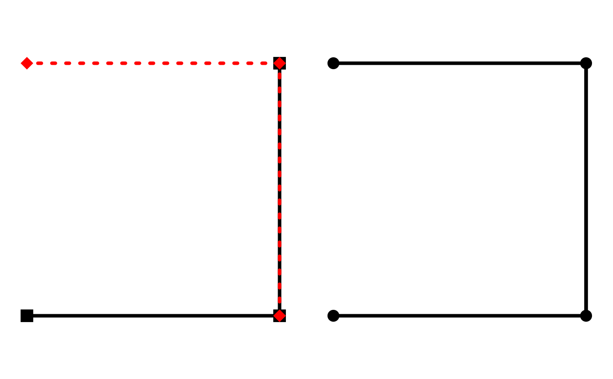

A spatial network specific join function which makes a spatial full join on
the geometries of the nodes data, based on the st_equals
spatial predicate. Edge data are combined using a
bind_rows semantic, meaning that data are matched by
column name and values are filled with NA if missing in either of the
networks. The from and to columns in the edge data are updated
such that they match the new node indices of the resulting network.
st_network_join(x, y, ...)
| x | An object of class |
|---|---|
| y | An object of class |
| ... | Arguments passed on to |
An object of class sfnetwork.
library(sf, quietly = TRUE) node1 = st_point(c(0, 0)) node2 = st_point(c(1, 0)) node3 = st_point(c(1,1)) node4 = st_point(c(0,1)) edge1 = st_sfc(st_linestring(c(node1, node2))) edge2 = st_sfc(st_linestring(c(node2, node3))) edge3 = st_sfc(st_linestring(c(node3, node4))) net = as_sfnetwork(c(edge1, edge2)) other_net = as_sfnetwork(c(edge2, edge3)) joined = st_network_join(net, other_net) joined#> # A sfnetwork with 4 nodes and 4 edges #> # #> # CRS: NA #> # #> # A directed acyclic multigraph with 1 component with spatially explicit edges #> # #> # Node Data: 4 x 1 (active) #> # Geometry type: POINT #> # Dimension: XY #> # Bounding box: xmin: 0 ymin: 0 xmax: 1 ymax: 1 #> x #> <POINT> #> 1 (0 0) #> 2 (1 0) #> 3 (1 1) #> 4 (0 1) #> # #> # Edge Data: 4 x 3 #> # Geometry type: LINESTRING #> # Dimension: XY #> # Bounding box: xmin: 0 ymin: 0 xmax: 1 ymax: 1 #> from to x #> <int> <int> <LINESTRING> #> 1 1 2 (0 0, 1 0) #> 2 2 3 (1 0, 1 1) #> 3 2 3 (1 0, 1 1) #> # … with 1 more row## Plot results. par(mar = c(1,1,1,1), mfrow = c(1,2)) plot(net, pch = 15, cex = 2, lwd = 4) plot(other_net, col = "red", pch = 18, cex = 2, lty = 3, lwd = 4, add = TRUE) plot(joined, cex = 2, lwd = 4)